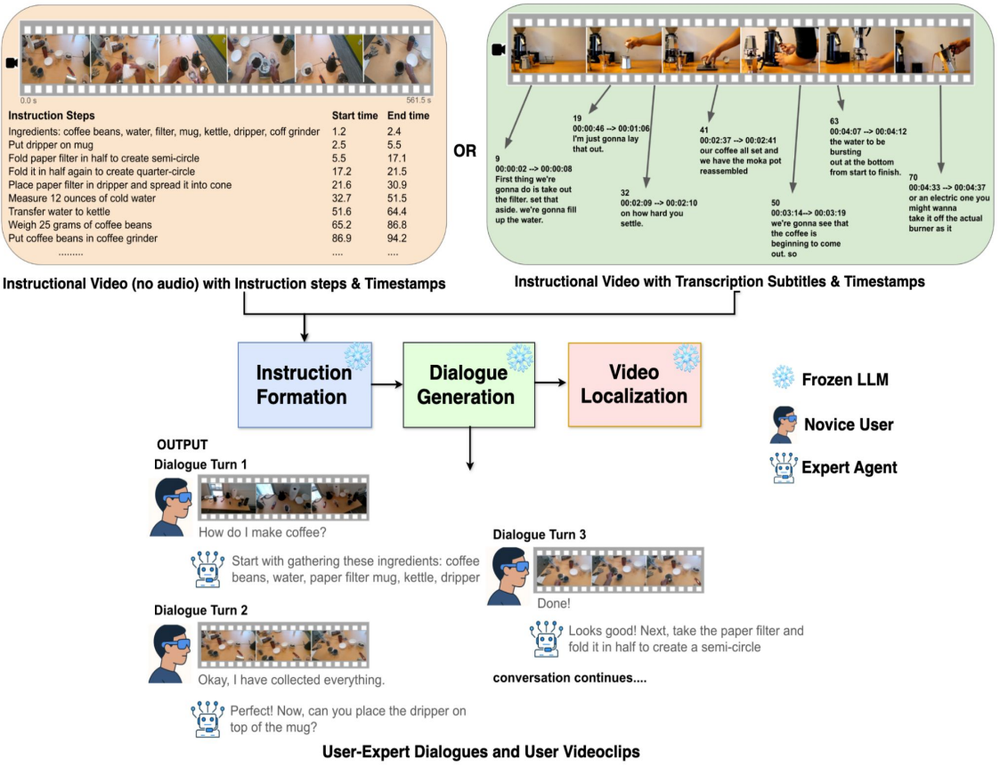
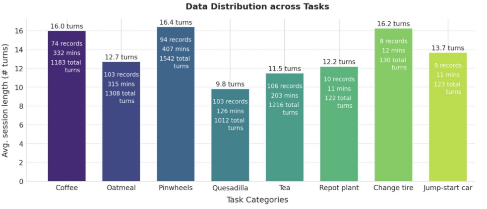
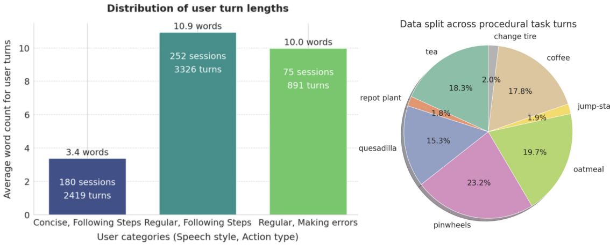
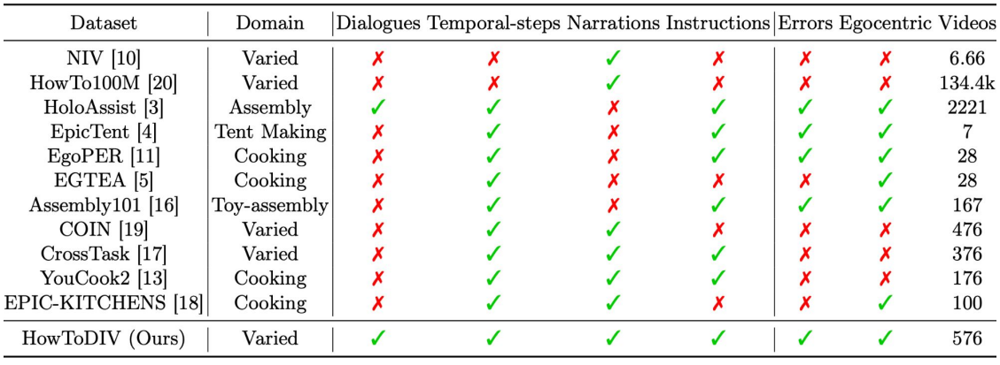
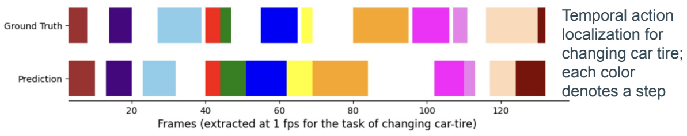
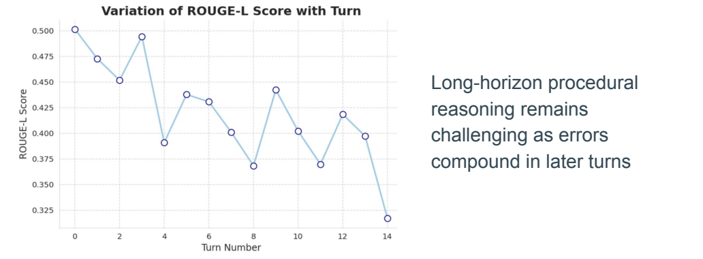

From Videos to Conversations:
Egocentric Instructions for Task Assistance
1 Work done while at Google, 2 Amazon, 3 Meta
HowToDIV converts single-speaker instructional videos into grounded, multi-turn conversations for egocentric task assistance.
Overview
A tutorial can show you how to make tea. But what happens when you miss a step, reach for the wrong ingredient, or ask, “What do I do now?” A helpful AR assistant needs to see what you’re doing, follow your progress, and help you get back on track. Training one takes video-grounded conversations, and collecting those at scale is expensive.
But we already have a wealth of instructional videos! What if we could turn those one-way tutorials into back-and-forth conversations? That’s the idea behind HowToDIV. Our automatic pipeline turns tutorials into expert–novice dialogues, pairing each turn with a corresponding video clip so the conversation stays grounded in the task.
monologue videoGrounded expert-novice dialogue
for multimodal task assistance
Method
Converting Monologue tutorials into Conversation: A fully automatic, prompt-based pipeline that converts instructional videos into multi-turn conversations with turn-level video grounding. The pipeline combines three stages as shown below.
{kind=link}

- Instruction Formation: Recover an ordered sequence of atomic, independently executable task steps from subtitles or action annotations.
- Dialogue Generation: Map and transform each step to a novice query and expert response (with clarifications, errors, and corrections).
- Video Localization: Align each user turn with the corresponding egocentric video segment using timestamps or subtitle boundaries.
Dataset
Using this pipeline, we build HowToDIV: a dataset of dialogues, instructions, and egocentric videos for how-to tasks.
{kind=link}

Conversational variation
{kind=link}

What the conversations include
- Atomic Procedural steps - Each action is independently executable and queryable.
- Turn-level egocentric grounding - Every turn is paired with a temporally aligned clip.
- Multi-turn dialogues - Conversations model progress, questions, guidance.
- Realistic human errors and corrective instructions from the expert agent.
| Instruction | User error |
|---|---|
| Place the tea bag in the mug | Dropped the tea bag on the floor |
| Roll the tortilla into a cylinder | Folded the tortilla in half |
| Fold the filter to create a semicircle | Tore the paper filter |
| Instruction | Modification |
|---|---|
| Drizzle honey in bowl | Pour sugar instead of honey |
| Stir using spoon | Stir using knife |
| Slice tortilla using knife | Slice tortilla using plate |
| Place tortilla on cutting board | Place tortilla on table |
Dataset Quality Control
- 93.2% of turns judged usable.
- Less than 4% of turns removed by automatic filters.
Comparison with existing datasets
{kind=link}

Our pipeline can be easily applied to existing video datasets and YouTube tutorials to scale this 100x-1000x. We invite researchers to extend HowToDIV to new tasks and domains and study how task assistance performance changes with more training data!
Results
Explicit structure improves responses
We benchmark two popular VLMs on the HowToDIV dataset:
| Model / input | BLEU | LLM-Judge | ROUGE-2 | ROUGE-L |
|---|---|---|---|---|
| Gemma-3-4B · History only | 0.321 | 2.870 | 0.125 | 0.270 |
| Gemma-3-4B · History + steps | 0.457 | 4.101 | 0.268 | 0.429 |
| Qwen2.5-VL-7B · History only | 0.281 | 2.995 | 0.105 | 0.220 |
| Qwen2.5-VL-7B · History + steps | 0.441 | 4.232 | 0.199 | 0.356 |
Key takeaway: Providing explicit procedural steps raises LLM-Judge from 2.87 → 4.10 (Gemma) and 3.00 → 4.23 (Qwen).
Long-horizon reasoning remains challenging
{kind=link}

{kind=link}

Takeaway
HowToDIV offers a new benchmark for real-time task assistance and a scalable path from abundant instructional videos to grounded conversations.
Build on HowToDIV
Start with the Getting Started instructions for access to the original EgoPER and NIV videos, then explore the HowToDIV dialogues and video annotations.
Citation
Lavisha Aggarwal, Vikas Bahirwani, and Andrea Colaco. From Videos to Conversations: Egocentric Instructions for Task Assistance. Pattern Recognition, ICPR 2026, LNCS 16821, pp. 463–478. Springer, 2027. DOI
BibTeX
@inproceedings{aggarwal2027videos,
author = {Aggarwal, Lavisha and Bahirwani, Vikas and Colaco, Andrea},
title = {From Videos to Conversations: Egocentric Instructions for Task Assistance},
booktitle = {Pattern Recognition. ICPR 2026},
series = {Lecture Notes in Computer Science},
volume = {16821},
pages = {463--478},
year = {2027},
publisher = {Springer, Cham},
doi = {10.1007/978-3-032-31438-3_31}
}